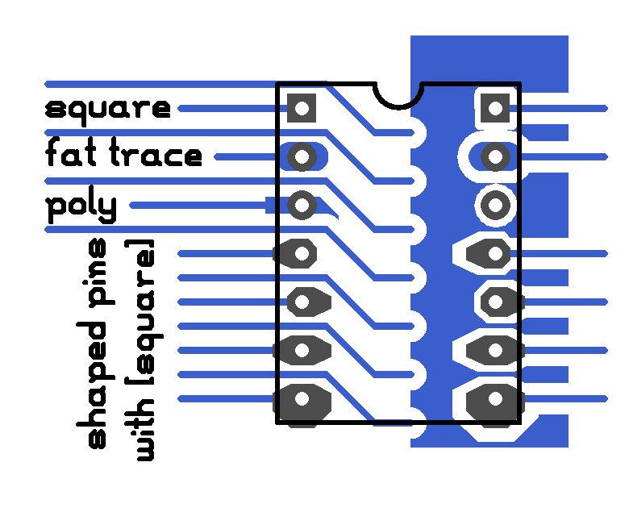

pcb-rnd - the [square] patch
Most of my PCBs end up in toner transfer. There are a lot
of tricks around prototyping at home. One of the problems I often
face is small rings peeling off during rework (and rework tend to
happen on the first prototypes). The solution for this is increasing
ring size - which is not suitable if traces are passing between pins.
Another solution is to increase the area of the pin:
- square pin: while it makes the pin slightly larger still letting traces pass between pins, it's too symmetrical and can not use up extra room
- DJ's teardrop plugin: this increases the area only toward the trace, whereas very often there's more room on the opposite side
- manually add an extra poly around the pin; with multiple pins it's hard to get the polys separate
- manually add a short extra track on the pin, width matching the size of the pin; this is very close, but increases workload when components are moved, layers are changed

The patch takes an octagon pin and stretches points in various directions.
There are 4 bits (for left, right, up and down) to indicate in which directions
the stretch applies. Pressing 'q' on a pin cycles thru round pin, square pin,
16 stretched octagons and the original octagon.
The code is also patched to handle clearances, shorts and connections (find.c).
Thermals are not fully working for funny shaped pins, but it has low priority:
they still work fine for rounded and square pins and if there is a poly around
the pin, I wouldn't use shaped pins anyway.
save/load and compatibility
This patch introduces a new pin flag called shape(n), where n is an integer
selecting the shape of the pin when the square flag is also set:
Pin[40000 60000 6000 3000 6600 2800 "8" "8" "square,shape(3)"]
Vanilla PCB will load the design ignoring the custom shape and will use a
square pin. As long a traces end in the center point of the pin, this
should not break connections.
Vanilla PCB doesn't save shape() - once the design is loaded and saved with
vanilla PCB pin shape info is lost.
plans
In the original code there are separate code paths for round, octagonal and
square pins. The separation repeats for at least:
- drawing the pin shape
- calculating the clearance
- checking whether things overlap or connect (pin vs pin, pin vs line, etc.)
- autorouter
In most cases a set of hardwired constants are written in the C code. A notable
exception was the octagon pin draw function, that had x and y offsets in a const
table for 8 points and a loop to create the poly (or line segments in thin draw).
The [square] feature is a good base for cleaning up the code a bit and for
moving toward a generic pin shape patch:
- hardwired octagon calculations should be replaced to use the same x;y const offset table
- the table should be replaced by a struct that describes length (number of points) - alternatively use POLYAREA
- square pin should be renamed to polygon pin
- octagon flag shall be removed - it should be a configuration of the x;y const table
- square flag shall be removed - it should be a configuration
- the only flag remaining should be shape(); if a pin is not shaped, it's round
- the pin shape struct should have a field for compatibility - to mark the entry corresponding to the original square and octagon pins so PCB-rnd format can be converted to and from the vanilla PCB format.
- there should be a set of pin shapes in a default configuration table, including square and octagonal; these should be static
- the PCB file format should be extended with an option to expand the pin shape table with custom shapes
- UI: shapes could be imported (converted) from polys around vias
- UI: since there may be a lot of pin shapes, a GUI selector alternative shall be offered while also keeping the cycle-thru 'q' key